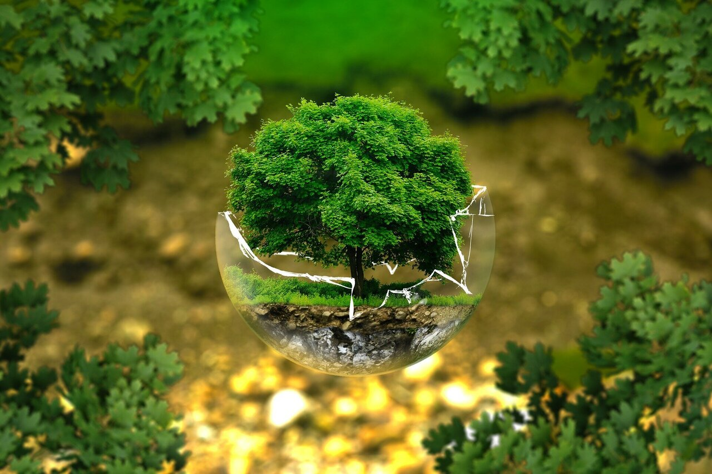

MAMA SAMIA INSTITUTE INTRO

A beautiful value based Incubator concept with the purpose of helping Tanzania bring sustainable digital economic growth in harmony with nature, local population and government requirements.
The Digitization of Tanzania is inevitable, we have a chance to make it a home grown digitization that considers the values, culture and actual needs of Tanzania rather than importing solutions that are often dependent on external parties that forces the assimilation of Tanzania to foreign requirements. The home grown digitization will unlock the potential of the Tanzanian economy.
We have a unique chance to use digital technology to advance a country's future with full sovereignty and independence.
Young people need actionable hope in the current global climate, it's often hard for them and their future often looks grim. Our future generations need hope and a practical way forward. The Mama Samia Institute wants to be the home for thousands of young people, helping them to create their own regenerative future which can have an impact on millions of people globally.
We do this by using advanced but sustainable technology concepts as well as a value based approach. We are not talkers, we are doers.

A UNIQUE CHANCE, GIFTS TO CHANGE "OUR WORLD"
Let's together make Tanzania the example of how an upgraded Internet and Digital Ecosystem can deliver prosperity to the future generations.
| OUR (INCUBAID & THREEFOLD) GIFT | TANZANIA/ZANZIBAR GIFT |
| Our Incubator will move to TNZ/ZNZ with all projects. | An amazing country we would like to call home. |
| Commitment from our team and leadership towards Tanzania and Zanzibar for years to come to make success together. Our dream is to help both countries to stay green, safe and independent in a changing global environment. | Leadership and a government who is willing to make change with Planet and People in mind, and sees the value for a digital future with endless potential. |
| Kristof, Ali and Nuru as leading team will do everything in their power to support Mama Samia and her government for long term success including global PR campaigns. Let's use digital as a driver for change with far reaching awareness (publicity) impact for current leadership and government. Imagine the impact for creating 3 Unicorns (valued startups) from out of Tanzania. | Mama Samia as President of Tanzania will lend her name and become the chairwomen of the Mama Samia Instute and will make some time available for the Institute leadership team to achieve our joint ambitious goals. Together we want to organize a fundraiser for the Institute from African investors to make sure that change comes from within. |
| Build 2 incubation centers, one in TNZ one in ZNZ. Create, grow and nurture new startups, with help of local resources. Resolve the biggest digital challenges for TNZ/ZNZ from within. The Incubation Centers are 51% owned by a foundation to make sure that control stays in the hands of 12 guardians and no takeover can ever happen. | Facilitate the search for a place to operate from. To start we suggest operating out of the Institute of Technology from Dar until the sustainable cyber city as described below will be ready. TNZ and ZNZ will make sure that the Incubator and Startups can be competitive compared to other regions like Europe, this might have implications on e.g tax regime for the startup and it's shareholders. |
| Save hundreds of millions of USD over next years to deliver the digital future for TNZ and ZNZ. Let's create our future together from within. Limit the amount of loans from outside, let's grow from the fertile land TNZ/ZNZ is. Every solution needs to be opensource and knowledge coming from people who are loyal to TNX and ZNZ. | Willingness to implement policies to not allow extraction of unnecessary resources out of the country. Empower the institute to research and create "independance and sustainability" as well as “Natural Wealth Conservation” policies as described below. |
| From out of the Incubator we want to create the first real sustainable city in TNZ/ZNZ of at least 5.000.000m2 combined over 2 countries. This would give room for hundreds of startups and it's teams to prosper in TNX/ZNZ and create huge visibility and show that Africa and more specifically TNZ/ZNZ does not have to rely on the US or CHINA for innovation. This can bring billions of USD in TNZ/ZNZ within 5 years and hope for your young population. There would be a school integrated. | Support for 2 sustainable cyber cities in Zanzibar and Tanzania with favorable tax climate for high tech startups. Let's bring foreign currencies into TNZ/ZNZ. By creating valuable exits, billions of USD will enter the countries. Make it very easy (tax friendly) for African investors to invest in startups in these cities, the tax should be at least competitive with Luxembourg or Switzerland in Europe. We can potentially structure it as a FreeZone. We are looking for land and government support to make it happen. |
| Additional | |
| Our best startups move their HQ to TNZ or ZNZ. Specifically for ThreeFold we expect the valuation to be +500m USD < 12 months, and recognized globally which would lead to serious visibility for TNZ in a tech and futuristic landscape. | All required support to make it easy for us to move the startups to Tanzania and/or Zanzibar. |
| Kristof is willing to donate 20% of shares of ThreeFold and other startups into the Mama Samia Institute which would create value right away. | We have ideas how further fundraising might happen in a sustainable and regenerative way especially in relation to Gold and Tanzanite stones. |
| Establish impactful startups right now with immediate benefit for Tanzania and countries around e.g. our own blockchain company, our own metaverse company, our work regenerative farming startup, … The idea is to create required knowledge & expertise in the country, this can go very fast, no reason to outsource and have money and other resources flow out of the country. | Tanzania/Zanzibar would support these startups by means of proof of concept projects which can later result in large scale deployments. |
Leading The "Digital Transformation of Africa Strategy (2020-2030)" of the African Union

The Institute of Mama Samia will be the first leading platform that implements the African Union strategy on Digital Transformation while placing the sovereignty and independence of Tanzania at the forefront of its operations.
The African Union has defined four steps to achieve a digital society for all Africans.
Bridging the Digital Divide
A critical first step which stresses the importance of access to digital infrastructure. Mama Samia Institute will have the technology and know-how needed to deploy digital infrastructure throughout Tanzania.
Invest in Digital inclusion and Skills
Mama Samia institute will host technology and startups that will focus on upskilling the digital capability and skills of Tanzanians through education, awareness and utilizing existing AU programs such as the " Online Digital Skills for All Programme".
Digitize Public Services at Scale
The AU Digitization Strategy stresses the importance of Public Private Partnerships in order to achieve scalability in the space of Digitizing public services. The Institute of Mama Samia provides the ideal platform to host startups and technologies that will work hand in hand with the government and local companies to develop digital solutions for each government sector.
Close the Digital Gap for Small and Medium Enterprises
The Mama Samia Institute will have the necessary technologies and know-how to launch projects that will tackle the inclusion of SMEs via the creation of E-Commerce platforms and Banking solutions to scale digital inclusion of citizens and SMEs.

WHY
The world has become a harsh place. Climate change is real. Economic systems seem to be on the verge of collapse. Many young people are losing hope. Everything seems to be based on survival of the fittest, still today we are all together wasting mother earth’s resources in favor of personal gain. This can and needs to change.
We believe emerging countries have an important role to play, they might have the will and power to leapfrog into a powerful digital ecosystem future. Many "so called" developed regions are stuck in the creations of their past. Their effort goes into trying not to lose what they have achieved. We believe this will not work. We need change, and change needs to happen now. This is for the future of our children.
We made mother earth sick. Let's empower our youth, let's say no to the constant brainwashing of the current internet and media systems. Our young friends need to be free in their mind, non manipulated, to be able to make decisions based on hope, respect and love, not based on fear.
Technology could be a solution but often these projects have been created to the benefit of the founders and their investors rather than the planet (look at most blockchain projects, which might have started with good intentions but many of them are no more than cleverly masked pyramid schemes making a few people rich).
Who are we to write these heavy words? Our team is here to make a difference, we have serious experience and want to put everything to work what we have achieved over the last 30 years to the benefit of the future generations, we choose to be at the service of emerging countries who mean well. We have the will, experience and drive to make it happen.
We believe that youth and specifically women can be the driver of much needed change where respect for nature and the endorsement of country communities will prevail.
MISSION and VISION
 |  |
Help Tanzania and countries around to build their own sovereign digital future battling climate change, supporting economic growth and education, improving equality, improving quality of farming and regenerative living.
Help start-ups create value for their local communities and investors, in a "ustainable regenerative way. Work with local and global investors to empower their projects.
VALUES and PRINCIPLES
What beliefs and principles should be respected and exercised to achieve our vision?
- Equality
- We believe that everyone should be given equal chances to learn, partake and succeed. Internet access is a human right, we commit to scale our technology to new regions to empower the unconnected.
- Autonomy
- We believe that everyone should own their data, and no one else. Our regenerative Peer-to-Peer technology allows every user to be data sovereign in line with their country requirements- giving them control over their data providing a safety net..
- Regeneration
- We unify our practices, partnerships, and products around a single mission - to heal our planet. By making our technology actionable, we enable a collective approach to have an impact together.
How is the Mama Samia Institute Different
Female Energy is a must !
Current world has become too male and materialistic. Female nurturing energy is a requirement. This has nothing to do with gender, but with energy required to birth change for a world who needs it badly.
No survival of the fittest
Rather than competition every member of the tribe helps their family to achieve required results to the benefit of the tribe. Collaboration over competition.
Value Based Approach
Values are not marketing, they are the basis for our operation, one of our gating factors to decide if we support a startup or not is to assess the team capability to live and adopt a set of values.
Respect for the planet and their peers is the basis of all.
Unique Collaboration System
20+ years of experience have taught us how to structure collaboration, a pyramid role based system is not effective and often not in line with the value system we believe in.
Read more on https://library.threefold.me/info/freeflow/#/collaboration/collaboration.md. Our startups typically are an order of magnitude more efficient because of this.
Rich ecosystem to start from
FreeFlow tribe comes with preloaded capabilities
- blockchain technology for money & smart contract chains
- tokenomincs & digital currency expertise, no need to reinvent the wheel
- cloud technology for deployment of any app on a local sovereign cloud
- digital self technology (a 10x more efficient way how to create digital life experiences for an upgraded internet)
- web, education, knowledge base framework: hit the ground running
Experience Counts = Startup Acceleration
No reason to reinvent the wheel. We know how to achieve results in a pragmatic and ethical way. We try to bring our values across.
Policies

Independance and Sustainability Policies (ISP)
Mama Samia Institute researches and develops required Independance and Sustainability Policies (ISP’s) for the multiple projects as are required by the government of TNZ and ZNZ.
Natural Wealth Conservation Policies (NWCP)
Tanzania is one of the richest countries in the world in relation to natural resources. TNZ literally sits on a goldmine. Mama Samia Institute wants to help create and research policies which can help conserve wealth and come up with strategies which allows collaboration with other nations in a sustainable way without sacrificing natural wealth. Mama Samia Institute would like to offer this research and suggestions to relevant ministries and other government instances.
Independance and Sustainability Policies (ISP)

Mama Samia Institute researches and develops required Independance and Sustainability Policies (ISP’s) for the multiple projects as required by the government of TNZ and ZNZ.
Independance and Sustainability Policies are based around the following principles:
-
As much as possible, Tanzania companies (with majority shareholding from Tanzania investors) and/or Mama Samia Institute are getting unlimited access to all required Intellectual Property (e.g. sourcecode in case of digital technology, or documents in case of other technology). Vendors who are not willing to open up their knowledge cannot deliver their projects to our country.
-
Break down each project to having to use most of the components that can be sourced from within the country, or from outside but then from multiple sources (India, China, Europe, US, etc.), and directly from the manufacturer of the components. This resolves longevity, independence, and reduced pricing, for the future.
-
Together with the eventual partner (if needed), to create local knowledge centers where the solutions can be recreated from the components as mentioned above without help from outside. The funding for such local centers need to come from project financing and the business case.
-
Create a large enough stock of replacement components as part of each project to make sure that continuation can be maintained if the global supply chain has hiccups.
-
Ask for the most simple solutions which are just good enough for the requirements which are respectful of the country resources and its people. Often things can be done in a much more simple way as vendors would like us to believe.
-
All products or services delivered need to be operated from TNZ/ZNZ.
-
No data can leave the country, all applications need to be hosted inside TNZ/ZNZ.
-
No product can have backdoors allowing others access into systems as deployed in the country. In case backdoors cannot be removed, sufficient protection mechanisms need to be created to try and mitigate the issues.
-
Do not sell out natural resources of TNZ and ZNZ, it's too easy right now for companies and people from outside to leverage the natural resources and divert the profits made from it outside the country. Resources from TNZ and ZNZ belong to people living in TNZ and ZNZ, as such these resources need to be protected and valued in the right way.
Some examples of where we know it can be done
- Telecom infrastructure (4G/5G), eventually even with local manufacturing
- Internet Infrastructure and most of its components
- Electric vehicles (batteries, simple cars and bicycles, …)
- Education systems and its required knowledge base
- Regenerative farming practices (organic fertilizers, data driven farming cycles, required machinery…) and its tools.
How can this be done?
We will build amazing locations in TNZ/ZNZ where top talent = high quality engineers, coders and technologists and their families will want to reside. These top talents will get free housing, 100% tax exemption for the time they work to deliver on the promise of ISP and most importantly a margin share in the success of the ISP project(s).
The Mama Samia Institute can be used as a validating point for the implementation of this approach, our aim is to also facilitate startups which can practically work on delivering some of the solutions 100% from within the country.
Reality check
This ambitious goal will not be achieved in one year, it will require time to materialize and a shift in mentality where many in the country believe we have to rely on resources from outside and we don’t have enough belief in our own capabilities and value in relation to a global world.
Natural Wealth Conservation Policies (NWCP)

Tanzania is one of the richest countries in the world in relation to natural resources. TNZ literally sits on a goldmine. Mama Samia Institute wants to help create and research policies which can help conserve wealth and come up with strategies which allows collaboration with other nations in a sustainable way without sacrificing natural wealth. Mama Samia Institute would like to offer this research and suggestions to relevant ministries and other government instances.
Some ideas
-
Foundations without shareholders are a practical way how land or mines can be owned without handing over control and too much of the profit to external shareholders.
-
Technology can resolve a lot. Practical satellite technology, blockchain and DAO (Decentralized Autonomous Organization) mechanisms can be used to make sure that there is a fair contribution in the country.
-
Rather than using debt based instruments, shariah compliant investment mechanisms are more safe to protect the wealth of TNZ and ZNZ.
How can this be done
-
MSI will organize educational sessions for the government together with global experts to make sure that enough knowledge is available. All of these sessions will be recorded and written down and made available in Swahili and English to everyone in the country.
-
Attract grants (not loans) from outside of the country to fund a large part of this work and hire required talent.
-
Help universities to introduce some new educational content and courses in relation to Natural Wealth Conservation and its potential for the nation of Tanzania.
-
Research and suggest some policies to make it happen.
Overview of some Unique Opportunities

ThreeFold
50m USD has been spent to create technology for a new internet, all has been done, the roll out is happening. We are willing to donate 20% of the shares of Threefold to Mama Samia Institute.
We are looking for ways to move the HQ from ThreeFold to ZNZ or TNZ.
ThreeFold will be valued +500m USD in the near future, and billions not much later, let's use this opportunity to make healthy PR for Tanzania and Zanzibar as a possible safe technology hub.
We can deliver a full blown internet experience for less than 1 USD per person per month.
ThreeFold would be 25% owned by MSI, initial investment from MSI = 5m USD for 5%, the other 20% has been donated by Kristof to the Mama Samia Institute.
OurLedger
Tanzania or Zanzibar does not need an American or Chinese blockchain as the base for its future digital currencies or for other blockchain requirements. We suggest to create a new company at least 51% owned by MSI which will deliver blockchain technology to TNZ, ZNZ and around. The technology delivered will be truly fully decentralized, with blockchain nodes in the region and with no backdoors. The sourcecode will be available and a lot of attention will go to make sure that the countries who use this blockchain technology have met their requirements without losing their sovereignity. This blockchain can be used for digital currencies even for a Central Bank Powered Currency, digital identity, land ownership, etc. All knowledge and technology will be available in the country.
Incubaid and Threefold will provide all required knowledge and technology.
OurVerse would be 51% owned by MSI, initial investment from MSI = 2m USD.
OurVerse
We would like to move our project OurVerse to ZNZ or TNZ. Ourverse owns an amazing metaverse technology. This technology can be used for augmented reality, education, virtual meetings, virtual health care, virtual shopping malls, etc. Possibilities of modern metaverse technology are endless.
OurVerse would be 20% owned by MSI, initial investment from MSI = 2m USD.
OmniSphere
The CyberPandemic is a reality, we have developed a real antidote for this problem. Security is becoming a major concern for governments. OmniSphere's purpose is to commercialize solutions based on ThreeFold and some other based on Incubaid startups technology for helping governments, banks and enterprises, to beat this CyberPandmic Virus with a real antidote.
We would like to move our project OmniSphere to ZNZ or TNZ.
OmniSphere would be 33% owned by MSI, initial investment from MSI = 5m USD. ThreeFold would own another 33%, another investor 20% and the team the remaining 14%.
OurLand
Ourland uses ThreeFold, OurLedger, OmniSphere and OurVerse to create an alternative to google maps, but way more powerful. This platform allows virtual and augmented reality access to a Virtual Reality enabled platform which has digitized all relevant data for TNZ and ZNZ.
Some capabilities
- Land Registry (2D and 3D, augmented and virtual reality, blockchain enabled)
- Country wide e-commerce marketplace (allow everyone to trade with each other)
- Alternative to Uber, Deliveroo, AirBNB, Expedia, etc.
- Virtual tourism (allow users to explore before actually coming to TNZ/ZNZ)
- Real time farming data
- Augmented reality powered infrastructure management
OurLand would be 51% owned by MSI, initial investment from MSI = 5m USD.
OurPort
Ourport uses ThreeFold, OurLedger, OmniSphere and OurVerse to create a solution to manage ports in the most automated way, and to lower the loss of revenues of the country.
Some capabilities
- Ledger (blockchain) based information flow
- Augmented reality for investigating containers & shipping protocol
- Advanced information system open to and integrated with external transport systems
- All hosted on sovereign ultra reliable internet platform as provided by ThreeFold
OurLand would be 80% owned by MSI, 20% by team, initial investment from MSI = 4m USD. We will look for further funding.
Sikana
A online video education platform with 4 billion views, we would like to futher develop it and make it crowdfunded to allow education to the African continent.
OurLand would be TBD % owned by MSI, 20% by team, initial investment from MSI = 2m USD, further funding would be looked for by means of crowdfunding and grants.
Other Projects
There are many more projects to create and relocate, but above gives us an idea of what is possible and how value can be created right away.
ONE OF OUR FIRST PROJECTS: "THE INTERNET NEEDS A FIX"

The Internet is one of mankind’s greatest achievements. More than ever, it is playing a crucial role in our evolution to the point that internet access has become a human right. However, still today more than 3 billion people have no access to the internet, especially in developing countries. That is because the current internet infrastructure consists of hyper-scale data centers that are extremely costly and hard to deploy.
Still, over 1 billion people and 70 billion devices are expected to join the digital economy by 2025. Digital inclusion as well as the emergence of Edge Computing, Blockchain, Big Data and the Internet of Things requires Internet capacity to expand well beyond its current limitations.
Today, there are only two options available: to build power-hungry, hyper-scale data centers that cost billions (if not trillion) of dollars and require expert maintenance and sales teams; or to give up on data ownership and outsource infrastructure requirements to the tech giants that already own the majority of all Internet infrastructure and networks today.
Net neutrality is at stake and humanity deserves a better alternative than a centralized and unsustainable system benefiting a handful of companies that turn people into products.
Powered by our open source technology, we have created an open, autonomous and regenerative Internet infrastructure that can scale limitlessly. It flips the current centralized model upside down, and allows anyone to join the world’s largest and fastest growing economy in the world - the Internet and cloud economy.
Some 100% owned startups
We would like to create some startups which are 100% owned by MSI and as such generate profit for MSI.
Two examples who will require some more explanation
- CBDC = Central Bank Digital Currency for TNZ/ZNZ
- Gold (maybe Tanzanite or other materials) Token based financing and mining
- Carbon credit farming & exchange platform
Example about the carbon credit farming projects: it is very beneficial for Tanzania as well as to the investors who might want to invest in such a startup. These carbon credits would be digitized by blockchain technology as provided by ThreeFold and the Mama Samia Institute. We want to fundraise money for a carbon farming startup in Tanzania with massive ICV (In Country Value), Protecting land and farming carbon credits are a possibility today providing good for everyone involved. For this project, we work with Take Action Global who will be an integral part of our Institute, see https://www.takeactionglobal.org/. They have very concrete and well working programs to enable youth through education to deliver on the promise of climate change and provide concrete benefits for them and their families.
Funding

Direct Investors in Mama Samia Institute
Together we fundraise 50m USD in Mama Samia Institute. We give out 20% of the shares of MSI to investors.
The investors get following benefits
- Preferential co-investment rights, they can invest upto 10x their investment into startups coming out of MSI. Example if an investor invests 2m USD in MSI, they can invest 20m USD in the startups coming out of MSI. The startups from MSI give absolute preferential rights to these investors
- Investors in the startups of the MSI always get liquidation preference on their investments, which means in case a startup has a less big exit as expected, they get their money back first
- Investors get Tax exemption on capital gains on their investment in the Institute as well as in the startups of the Institute (using their co-investment rights)
- Investors get preferential right to commercialize the products and services as offered by these startups
- They can leverage the knowledge and research capabilities of MSI for their own companies without having to pay for it. All knowledge is available to them. Regular training sessions will be organized which are available for employees of the investor
- They get a return on their investment as the Institute grows, the shares will be made liquid by means of a regulated Security Token Offering.
This 50m USD will be a required first step to get us going.
Grants
MSI will create a department of talented people who know how to apply for grants and get money in a safe (not debt based) way without sacrificing any of our policies as defined in NWCP and ISP.
We expect to be able to mobilize +50m USD of grants per year within a couple of years.
Sponsoring from partners.
- The institute is looking for sponsors
- The institute grows knowledge and opportunities for its ecosystem
- The institute will provide valuable knowledge to every company or organization in Tanzania and around
- The institute would be very happy to share this knowledge to any sponsor free of charge
- One of the key question the institute tries to answer is how can organizations be more effective with collaboration, IT systems, security, cloud and tools. Being effective in a highly dynamic environment is important, this is super valuable information which can benefit all participants
- This information will be free of charge and training sessions / seminars will be created to allow the Samia Institute Sponsors to create value for their own communities
- The help from the sponsors is highly appreciated and will also be mentioned on the website of the institute
Exits
The institute will get meaningful exits which means serious cash will come because of exits. Kristof and Incubaid are willing to donate shares of their startups to MSI which might be worth hundreds of millions within 5 years.
New startups will also generate exits and liquidity, these proceeds can be used to further grow the Institute.
Next to the financial gain, these exits will be PR wise very important for our country.
Margin/Revenue Sharing Opportunities
Often MSI will be able to participate in margin or revenue share of projects the startups deliver.
Projects & Value Increase Simulation

This suggested overview of initial projects shows how an incredible amount of value can be created with respect for the planet, people and the investors.
Structure

EXPERIENCE
OUR PREVIOUS SUCCESSES
 .
.
{{#include achievements.md}}
10 YEARS IS TOO LONG, WE NEED TO GO FASTER
There are many projects out there which are looking forward to over 10, 20 or even 30 years. We believe this is too slow, we need change now.
We have all it takes to start now, let's hit the ground running.
Don’t talk, act, is our motto. Through decentralization faster change can be achieved.
Startup Phase
- Sign concrete MOU
- Fundraise (50m) and get necessary structure setup
- Finalization of the plan, required budgets, strategic alignment, etc.
- Establish ThreeFold Tanzania as basis for Internet Expansion
- Deploy first internet capacity on the ground as proof of concept
year 1 plan
- Institute established and funded
- Start from Technical University DAR
- Deploy POC’s for the initial projects, get PR coverage
- Establish teams
- PR Team (public relations, promotion, global coverage)
- Grants Team (find funding through grants)
- Innovation Team
- Create Policy Teams
- First 5 projects up and running
- ThreeFold project funded for Tanzania use case, deploy internet capacity with partners
- For this a PPP structure is probably easiest
- Work with local ecosystem to grow the grid:
- 10.000+ students take part of our climate change project This can also provides access to free education and internet systems.
year 2 plan
- Work with local ecosystem to grow the grid:
- At least 10.000 nodes installed
- 100.000+ students enabled with climate change projects
- Meaningful measurable climate change impact (demonstrated & visual) Carbon credit generation
- KILIMANJARO Project
- +60% of our digital life needs available on the ThreeFold Grid in Tanzania (this is huge, it is the alternative system, with all respect for planet & country)
- Institute Working
- 10 projects in Incubator up and running, network effects have effect.
- Lots more funding from abroad for the Institute.
- Concrete proof points show how
- Mama Energy and Youth Focus does make a difference in providing more sustainable solutions, this needs to be measurable and demonstrable.
year 3 plan
- Large majority of population has access to this new sovereign internet system
- Majority of our digital life needs available on the ThreeFold Grid in Tanzania (experiences)
- Large majority of schools know about the climate change projects, and education opportunities on this new internet
- First Mama Energy enabled startups to get to larger value and potentially exits
- Some first exits show the value potential of what the incubator is creating.
- ...tbd…
A personal note from the founders:
We believe the planet is a beautiful place, we believe the super large majority of people do mean well. But many of us live in fear and that holds us back. Basic needs are often not covered, this will remain challenging but providing regenerative tools might help.
The internet and new technologies can be an incredible tool to bring wealth to large amounts of people but today this is not the case. Very few (internet companies) have the benefit of us all.
The internet used to be an incredible invention and place, we lost this, we want to help restore the internet to its original glory and deliver it as a tool for humanity to create on.
Our personal passion is to deliver a system which allows us all to co-create our future and work together rather than having to compete and fight for survival. We had incredible mentors who showed us some of the pieces required for which we are very grateful.
We believe the world needs more female energy and through youth and women empowerment big change can be achieved in a more sustainable way.
We spend all our time trying to help where we can and let this vision come alive.
We personally feel more at home in emerging countries compared to the more developed regions, there seems to be more possibility for creation and often people more easily find the path to their hearts. Real emotions are what drives us all.
The Link To Tanzania
We as founders are looking for a place where we can recreate and provide real value by means of gifting our skills and time and knowledge to a meaningful set of projects.
- Tanzania was the birthplace of humanity long ago.
- Zanzibar was instrumental in abolishing slavery.
How meaningful is it that we can bring real freedom back to the world starting from this place.
Personally, I have enough, I don’t like where places like Europe are going to, an alternative is needed. Most "none emerging" countries today are stuck and nothing can be realized.
I personally believe Tanzania is so much more powerful and valuable than the average citizen believes. We feel the urge to help Tanzania to protect its resources and create their own independent future as much as possible without being taken advantage of.
We are looking forward to a real chance to make a change for the benefit of the country we call our new home for ourselves and our close communities.
We are looking forward for a chance to show that other values can be used to create prosperity:
| GOOD = Heart Driven | BAD = Fear Driven |
| Purpose, money as a gift. | Profit, money as a drug. |
| Give First, Receive Later | Take first, maybe Give Back Later. |
| The power is within us. We need to choose that we have a choice, we are not powerless. | Stardom, we need heroes, we want what they achieved, we hope for happyness that way. |
| Respect for the planet & people around us. | We need to grab what we can. |
| Collaborate. | Survival of the fittest. |
| Sustainability. | Unhealthy drive for over optimization=efficiency. |
| Empowering & Transparency. | Controlling and Secrecy. |
Of course we understand it's not always easy to achieve the above in the current world situation but we believe we have a real chance to use the technology we have available to be much more aligned with the above table.
Friendly planet positive regards
Mama Samia Institute Founders